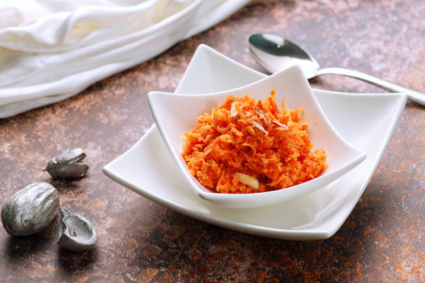

Gajar Ka Halwa

Description
Ingredients
2 tablespoons ghee or oil
½ cup raisins or sultanas
1 ½ teaspoons ground cardamom
8 tablespoons chopped pistachio nuts
Steps
- Heat ghee in a large saucepan over medium heat and add carrots. Cook and stir briefly, about 3 minutes. Pour in milk and increase heat; bring to a boil and cook, stirring constantly, for 5 minutes. Reduce heat to low and simmer gently, uncovered, and stirring occasionally until moisture evaporates, about 1 hour.
- Bring carrot mixture back to a boil; add sugar, raisins, cardamom, and saffron. Cook and stir until mixture has thickened, about 10 minutes.
- Ladle carrot halwa into 8 individual serving dishes. Top each serving with 1 tablespoon pistachios. Serve warm or chill before serving.